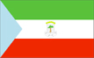
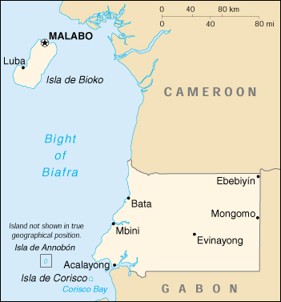

{kind=link}


| Equatorial Guinea |  |
|
|  | |
| Introduction |
Background: Composed of a mainland portion and five inhabited islands, Equatorial Guinea has been ruled by ruthless leaders who have badly mismanaged the economy since independence from 190 years of Spanish rule in 1968. Although nominally a constitutional democracy since 1991, the 1996 presidential and 1999 legislative elections were widely seen as being flawed.
| Geography |
Location: Western Africa, bordering the Bight of Biafra, between Cameroon and Gabon
Geographic coordinates: 2 00 N, 10 00 E
Map references: Africa
Area:
total:
28,051 sq km
land:
28,051 sq km
water:
0 sq km
Area - comparative: slightly smaller than Maryland
Land boundaries:
total:
539 km
border countries:
Cameroon 189 km, Gabon 350 km
Coastline: 296 km
Maritime claims:
exclusive economic zone:
200 nm
territorial sea:
12 nm
Climate: tropical; always hot, humid
Terrain: coastal plains rise to interior hills; islands are volcanic
Elevation extremes:
lowest point:
Atlantic Ocean 0 m
highest point:
Pico Basile 3,008 m
Natural resources: oil, petroleum, timber, small unexploited deposits of gold, manganese, uranium
Land use:
arable land:
5%
permanent crops:
4%
permanent pastures:
4%
forests and woodland:
46%
other:
41% (1993 est.)
Irrigated land: NA sq km
Natural hazards: violent windstorms, flash floods
Environment - current issues: tap water is not potable; desertification
Environment - international agreements:
party to:
Biodiversity, Desertification, Endangered Species, Law of the Sea, Ship Pollution
signed, but not ratified:
none of the selected agreements
Geography - note: insular and continental regions rather widely separated
| People |
Population: 474,214 (July 2000 est.)
Age structure:
0-14 years:
43% (male 101,724; female 100,787)
15-64 years:
54% (male 121,290; female 132,581)
65 years and over:
3% (male 7,960; female 9,872) (2000 est.)
Population growth rate: 2.47% (2000 est.)
Birth rate: 38.13 births/1,000 population (2000 est.)
Death rate: 13.4 deaths/1,000 population (2000 est.)
Net migration rate: 0 migrant(s)/1,000 population (2000 est.)
Sex ratio:
at birth:
1.03 male(s)/female
under 15 years:
1.01 male(s)/female
15-64 years:
0.91 male(s)/female
65 years and over:
0.81 male(s)/female
total population:
0.95 male(s)/female (2000 est.)
Infant mortality rate: 94.83 deaths/1,000 live births (2000 est.)
Life expectancy at birth:
total population:
53.56 years
male:
51.53 years
female:
55.65 years (2000 est.)
Total fertility rate: 4.94 children born/woman (2000 est.)
Nationality:
noun:
Equatorial Guinean(s) or Equatoguinean(s)
adjective:
Equatorial Guinean or Equatoguinean
Ethnic groups: Bioko (primarily Bubi, some Fernandinos), Rio Muni (primarily Fang), Europeans less than 1,000, mostly Spanish
Religions: nominally Christian and predominantly Roman Catholic, pagan practices
Languages: Spanish (official), French (official), pidgin English, Fang, Bubi, Ibo
Literacy:
definition:
age 15 and over can read and write
total population:
78.5%
male:
89.6%
female:
68.1% (1995 est.)
| Government |
Country name:
conventional long form:
Republic of Equatorial Guinea
conventional short form:
Equatorial Guinea
local long form:
Republica de Guinea Ecuatorial
local short form:
Guinea Ecuatorial
former:
Spanish Guinea
Data code: EK
Government type: republic
Capital: Malabo
Administrative divisions: 7 provinces (provincias, singular - provincia); Annobon, Bioko Norte, Bioko Sur, Centro Sur, Kie-Ntem, Litoral, Wele-Nzas
Independence: 12 October 1968 (from Spain)
National holiday: Independence Day, 12 October (1968)
Constitution: approved by national referendum 17 November 1991; amended January 1995
Legal system: partly based on Spanish civil law and tribal custom
Suffrage: 18 years of age; universal adult
Executive branch:
chief of state:
President Brig. Gen. (Ret.) Teodoro OBIANG NGUEMA MBASOGO (since 3 August 1979 when he seized power in a military coup)
head of government:
Prime Minister Serafin Seriche DOUGAN (since NA April 1996); First Vice Prime Minister and Agriculture Minister Miguel OYONO NDONG (since NA January 1998); Second Vice Prime Minister for Internal Affairs Demetrio Elo NDONG NZE FUMU (since NA January 1998)
cabinet:
Council of Ministers appointed by the president
elections:
president elected by popular vote to a seven-year term; election last held 25 February 1996 (next to be held NA February 2003); prime minister and vice prime ministers appointed by the president
election results:
President Teodoro OBIANG NGUEMA MBASOGO reelected with 98% of popular vote in elections marred by widespread fraud
Legislative branch:
unicameral House of People's Representatives or Camara de Representantes del Pueblo (80 seats; members directly elected by popular vote to serve five-year terms)
elections:
last held 7 March 1999 (next to be held NA 2004)
election results:
percent of vote by party - PDGE 80%, UP 6%, CPDS 5%; seats by party - PDGE 75, UP 4 and CPDS 1
note:
opposition parties have refused to take up their seats in the House to protest widespread irregularities in the 1999 legislative elections
Judicial branch: Supreme Tribunal
Political parties and leaders: Convergence Party for Social Democracy or CPDS [Placido Miko ABOGO]; Democratic Party for Equatorial Guinea or PDGE (ruling party) [Augustin Nse NFUMU]; Party for Progress of Equatorial Guinea or PPGE [Severo MOTO]; Popular Action of Equatorial Guinea or APGE [Miguel Esono EMAN]; Popular Union or UP [Fabian MUSA, general secretary]; Progressive Democratic Alliance or ADP [Victorino Bolekia BONAY, mayor of Malabo]
International organization participation: ACCT, ACP, AfDB, BDEAC, CEEAC, ECA, FAO, FZ, G-77, IBRD, ICAO, ICRM, IDA, IFAD, IFC, IFRCS, ILO, IMF, IMO, Intelsat, Interpol, IOC, ITU, NAM, OAS (observer), OAU, OPCW, UDEAC, UN, UNCTAD, UNESCO, UNIDO, UPU, WHO, WIPO, WToO, WTrO (applicant)
Diplomatic representation in the US:
chief of mission:
Ambassador Pastor Micha ONDO BILE
chancery:
1712 I Street NW, Suite 410, Washington, DC 20006
telephone:
[1] (202) 296-4174
FAX:
[1] (202) 296-4195
Diplomatic representation from the US:
chief of mission:
Ambassador John M. YATES
note:
the US does not have an embassy in Equatorial Guinea (embassy closed September 1995); US relations with Equatorial Guinea are handled through the US Embassy in Yaounde, Cameroon; the US State Department is considering opening a Consulate Agency in Malabo
Flag description: three equal horizontal bands of green (top), white, and red with a blue isosceles triangle based on the hoist side and the coat of arms centered in the white band; the coat of arms has six yellow six-pointed stars (representing the mainland and five offshore islands) above a gray shield bearing a silk-cotton tree and below which is a scroll with the motto UNIDAD, PAZ, JUSTICIA (Unity, Peace, Justice)
| Economy |
Economy - overview: The discovery and exploitation of large oil reserves have contributed to dramatic economic growth in recent years. Forestry, farming, and fishing are also major components of GDP. Subsistence farming predominates. Although pre-independence Equatorial Guinea counted on cocoa production for hard currency earnings, the deterioration of the rural economy under successive brutal regimes has diminished potential for agriculture-led growth. A number of aid programs sponsored by the World Bank and the IMF have been cut off since 1993 because of the government's gross corruption and mismanagement. Businesses, for the most part, are owned by government officials and their family members. Undeveloped natural resources include titanium, iron ore, manganese, uranium, and alluvial gold. The country responded favorably to the devaluation of the CFA franc in January 1994. Boosts in production, along with high world oil prices, should further stimulate growth in 2000-2001.
GDP: purchasing power parity - $960 million (1999 est.)
GDP - real growth rate: 15% (1999 est.)
GDP - per capita: purchasing power parity - $2,000 (1999 est.)
GDP - composition by sector:
agriculture:
20%
industry:
60%
services:
20% (1998 est.)
Population below poverty line: NA%
Household income or consumption by percentage share:
lowest 10%:
NA%
highest 10%:
NA%
Inflation rate (consumer prices): 6% (1999 est.)
Labor force: NA
Unemployment rate: 30% (1998 est.)
Budget:
revenues:
$47 million
expenditures:
$43 million, including capital expenditures of $7 million (1996 est.)
Industries: petroleum, fishing, sawmilling, natural gas
Industrial production growth rate: 7.4% (1994 est.)
Electricity - production: 21 million kWh (1998)
Electricity - production by source:
fossil fuel:
85.71%
hydro:
14.29%
nuclear:
0%
other:
0% (1998)
Electricity - consumption: 20 million kWh (1998)
Electricity - exports: 0 kWh (1998)
Electricity - imports: 0 kWh (1998)
Agriculture - products: coffee, cocoa, rice, yams, cassava (tapioca), bananas, palm oil nuts; livestock; timber
Exports: $555 million (f.o.b., 1999)
Exports - commodities: petroleum, timber, cocoa
Exports - partners: US 62%, Spain 17%, China 9%, France 3%, Japan 3%, (1997)
Imports: $300 million (f.o.b., 1999)
Imports - commodities: petroleum, manufactured goods and equipment
Imports - partners: US 35%, France 15%, Spain 10%, Cameroon 10%, UK 6% (1997)
Debt - external: $290 million (1999 est.)
Economic aid - recipient: $33.8 million (1995)
Currency: 1 Communaute Financiere Africaine franc (CFAF) = 100 centimes
Exchange rates:
Communaute Financiere Africaine francs (CFAF) per US$1 - 647.25 (January 2000), 615.70 (1999), 589.95 (1998), 583.67 (1997), 511.55 (1996), 499.15 (1995)
note:
since 1 January 1999, the CFAF is pegged to the euro at a rate of 655.957 CFA francs per euro
Fiscal year: 1 April - 31 March
| Communications |
Telephones - main lines in use: 3,000 (1995)
Telephones - mobile cellular: 0 (1995)
Telephone system:
poor system with adequate government services
domestic:
NA
international:
international communications from Bata and Malabo to African and European countries; satellite earth station - 1 Intelsat (Indian Ocean)
Radio broadcast stations: AM 0, FM 2, shortwave 4 (1998)
Radios: 180,000 (1997)
Television broadcast stations: 1 (1997)
Televisions: 4,000 (1997)
Internet Service Providers (ISPs): NA
| Transportation |
Railways:
total:
0 km
Highways:
total:
2,880 km
paved:
0 km
unpaved:
2,880 km (1996 est.)
Ports and harbors: Bata, Luba, Malabo
Merchant marine:
total:
11 ships (1,000 GRT or over) totaling 25,907 GRT/26,812 DWT
ships by type:
cargo 8, passenger 2, passenger/cargo 1 (1999 est.)
Airports: 3 (1999 est.)
Airports - with paved runways:
total:
2
2,438 to 3,047 m:
1
1,524 to 2,437 m:
1 (1999 est.)
Airports - with unpaved runways:
total:
1
under 914 m:
1 (1999 est.)
| Military |
Military branches: Army, Navy, Air Force, Rapid Intervention Force, National Police
Military manpower - availability:
males age 15-49:
105,420 (2000 est.)
Military manpower - fit for military service:
males age 15-49:
53,564 (2000 est.)
Military expenditures - dollar figure: $3 million (FY97/98)
Military expenditures - percent of GDP: 0.6% (FY97/98)
| Transnational Issues |
Disputes - international: exclusive maritime economic zone boundary dispute with Cameroon is presently before the ICJ; maritime boundary dispute with Gabon because of disputed sovereignty over islands in Corisco Bay; maritime boundary dispute with Nigeria and Cameroon because of disputed jurisdiction over oil-rich areas in the Gulf of Guinea